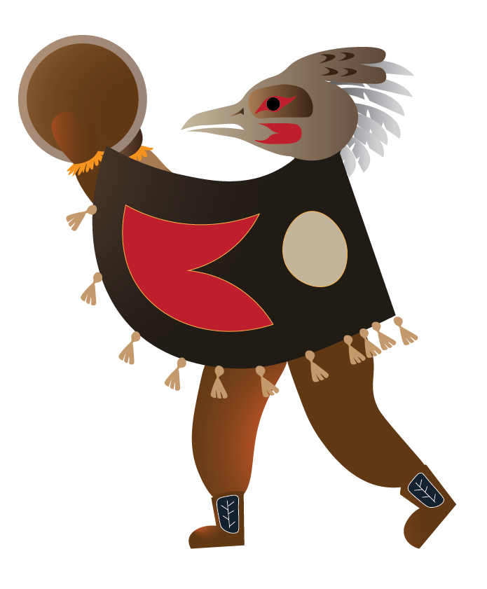
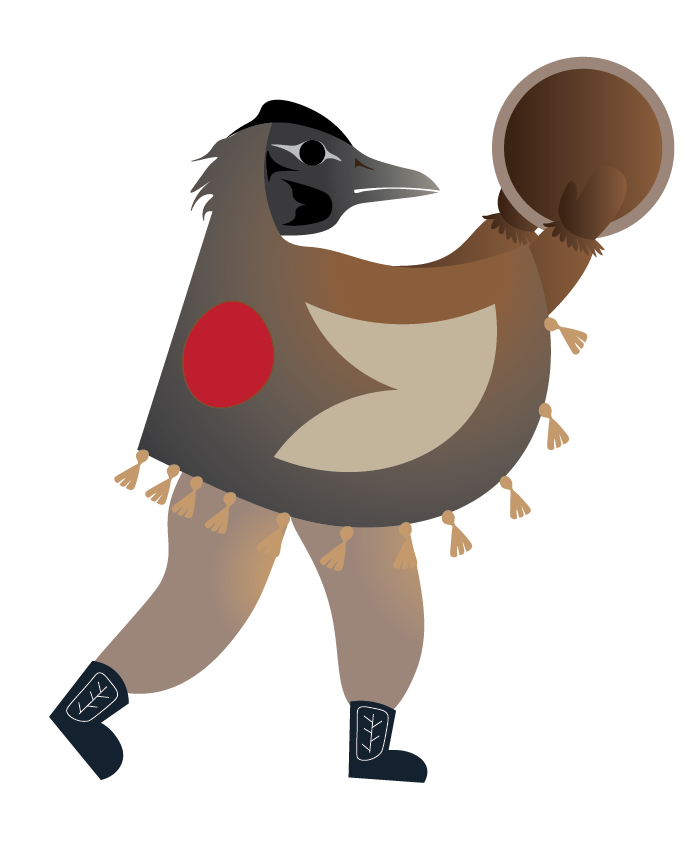
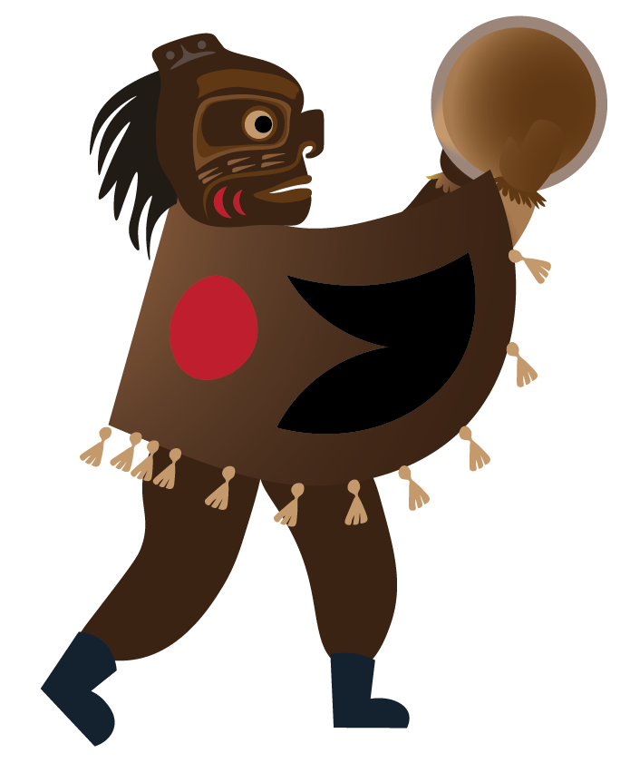
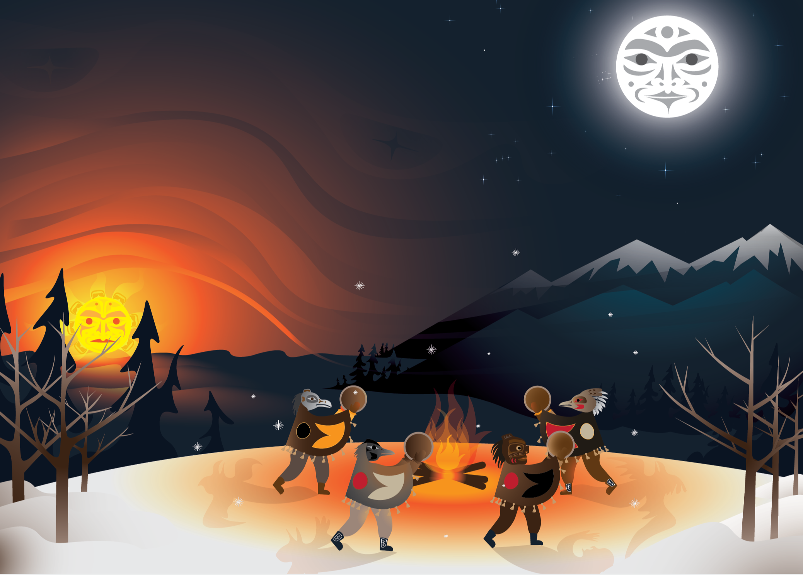
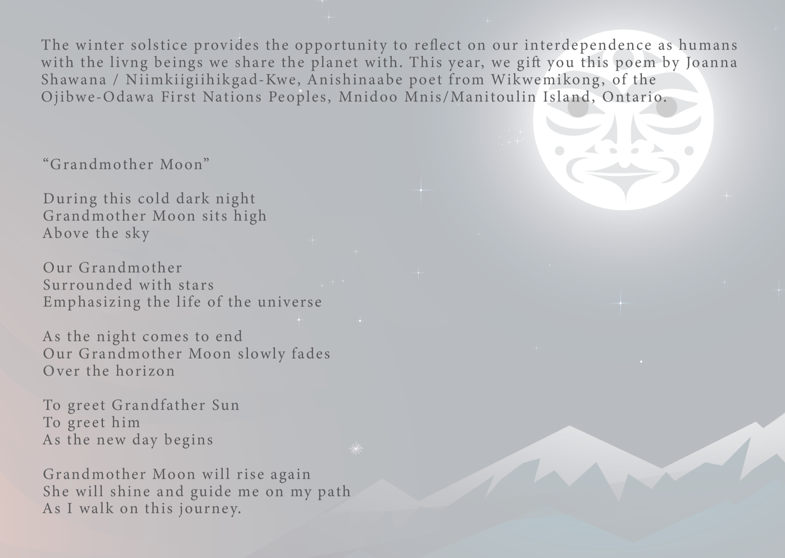

Winter Solstice 2022
2023 versionMy Role
The design is created by me, reviewed by the supervisor, approved by the directors, and finally submitted to the CEO for approval before printing.
Project Purpose
I am the Public Relations and Communications representative, and part of my duties includes creating designs. The Winter Solstice greeting cards are a component of external communication and public relations.
The purpose of the card is to send our gratitude for the collaboration and the support they have provided us through the year on this day traditionally celebrated by the Indigenous Peoples.
Each of the 3 locations at VACFSS also receives a different volume of cards which needs coordinating.
I am also part of that planning process with support from my supervisor.
The printed greeting cards will be sent out to our 250+ community partners and ~250 caregivers.
Process
Insperation
Since the beginning of my position in May 2020, I have developed a habit of collecting artworks I love, created by Indigenous artists in the Lower Mainland.
I display these works alongside digital archives to inspire the graphic designs and illustrations I create for VACFSS.
Sketching
I find jotting down ideas to be the best practice, so for the first few weeks,
I educated myself on Indigenous mythology, cultural terms, and symbolism of various nations of the Coast Salish and Vancouver area.

Illustration verses hand drawn
One of the challenges I faced was how the painting on an iPad lacked scalability and the ability to adjust colors.
Whereas on Illustrator, I could sketch out concepts with vectors, and the lines would never be blurry.
Coast Salish works and formline design are also composed of clean and smooth outlines and symbols, which I felt my drawings lacked.
So despite having worked on painting and sketching on Procreate for many days, I went on to vectorize my design on Illustrator.

Editing
I received critique from my supervisor at the time that the raven was a little distracting and not "friendly enough," so I had to remove it in the next stage of my process.
Indigenous Mythology
However, having purchased books on Indigenous stories and learned so much, I felt the need to include them in my piece.
Instead of people who are the same only with different colors like in the initial painting,
each figure would represent a spirit, such as the thunderbird, the men in the woods, the eagle, and the raven dancing around the fire.
Thunderbird
And animal with great power, related to it's name, thunder.
Raven
The trickster, the raven is smart but also the truble maker.
Men in the woods
The lost man in the wood, a story told like the bigfoot.
Eagle
A big with pride and intellgence.

Final Illustration editing process
The final illustration went through at least 6 rounds of major editing, with each round involving printing the design and noticing details to be changed.
My goal was for the viewer to feel as though they are approaching a ceremony in the woods, under the gazes of the sun and the moon,
deep in the forest and before the waters and the distant mountains.

Front Cover
Backside
Reflection
As the first major illustration I have created for VACFSS, it was designed with Illustrator and later approved by the CEO for printing and delivery.
I faced a learning curve, bouncing from ideas until the last week of the deadline.
I also "mastered" the use of gradients, a tool that I was previously intimidated by.